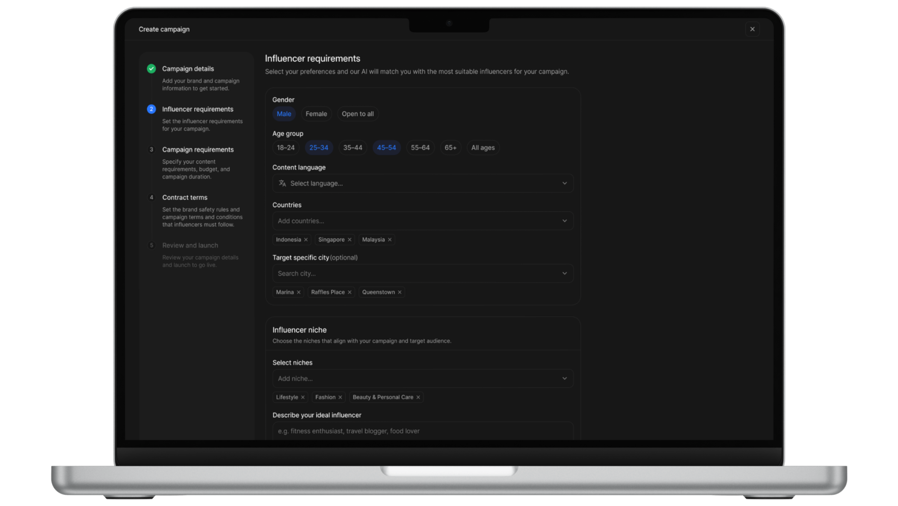
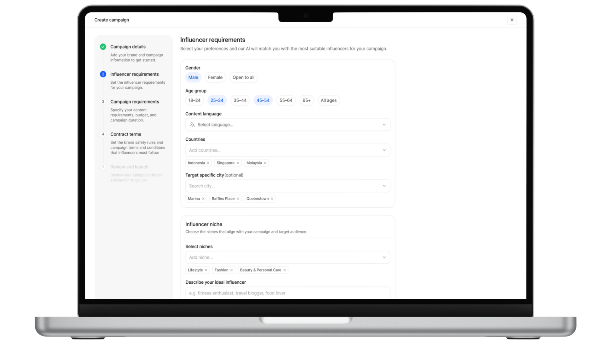

Rebuilding a complex AI marketing platform into a clear, scalable experience brands can grow with.
Atisfyreach matchmakes brands and influencers with AI. It’s the brand-side platform of Atisfy, an end-to-end, automated influencer marketing solution that uses data and AI to connect brands with authentic content creators who truly align to their identity, and to plan, launch, and coordinate cross-platform, multi-country campaigns in a single flow.
The original Atisfyreach was capable, but it asked too much of its users. As the platform grew, its structure, hierarchy, and visual language hadn’t kept pace, leaving brands to work harder than they should to run their campaigns.
Beyond fixing these fundamentals, the revamp was also a chance to introduce new capabilities like budget-based performance prediction and a guided campaign-creation flow.


Rebuild the core flows (campaign and promo creation) into clear, guided, step-by-step journeys, so brands always know where they are, what’s next, and what matters most.
Replace the heavy, clashing UI with a calm, modern visual language and a unified component library, with consistent hierarchy and styling so the interface explains itself.
Restructure dense tables into scannable layouts and introduce predictive tools like budget-based performance prediction, so brands don’t just see numbers, they act on them.
Audited the existing product end to end, mapped every flow, and gathered input from brands and internal stakeholders to surface where the experience broke down.
Synthesised findings into clear problem statements, reworked the information architecture, and prioritised the flows that mattered most, starting with campaign and promo creation.
Created a scalable design system, then moved from wireframes to high-fidelity prototypes, establishing consistent hierarchy, components, and data patterns across the platform.
Partnered with engineering on handoff and QA, validated against the original pain points, and shipped iteratively, including new capabilities like budget-based performance prediction.
I combined a full UX audit of the existing platform with stakeholder interviews, brand-user feedback, and support and usage data to understand where the experience was failing, and why.
Campaign and promo setup spanned one endless page; users couldn’t tell how far along they were or what was required next. This pointed to a guided, chunked flow with clear progress.
Nearly every field relied on a “?” tooltip, so people leaned on support instead of the interface. Clarity had to be built into hierarchy, labels, and defaults, not bolted on.
Key metrics existed but lived in dense tables and gauges, so brands struggled to judge performance or budget. The fix was to restructure data for scanning and add predictive guidance.
To fix consistency at the root, I built a design system: shared foundations and reusable components that keep every screen coherent and let the product scale without redesigning from scratch.


Problem. Brands had no way to vet influencer content before it went live, risking off-brand or non-compliant posts.
Shipped. A review step where brands approve or request changes to submitted content before it’s published.
Problem. Brands set campaign budgets blind, with no sense of what their spend would actually return.
Shipped. Live projections of impressions, clicks, reach, and engagement rate that update with the budget during campaign creation.
Problem. A campaign’s reach was capped to a single platform, leaving extra distribution on the table.
Shipped. The ability to ask influencers to cross-post a campaign’s content to additional social platforms from one place.
A design system speeds up the work and keeps things consistent, but I learned when to bend its rules to fit what the product and the user actually need.
On a complex product, designing only for the ideal journey isn’t enough. Accounting for errors and edge cases is just as important to scaling the experience.
Understanding the engineering perspective and asking questions surfaced scenarios I’d have missed, and helped me shape a better experience with an engineering lens.
Working on a product already in use taught me to design around messy, real-world data and intricate existing flows, not idealised ones.